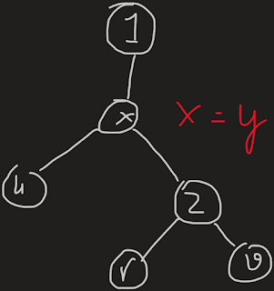

HBTLCA
Đề bài: Cho một cây $n$ đỉnh ban đầu có gốc là $1$. Thực hiện 2 loại truy vấn:
- "! r": chọn $r$ làm gốc.
- "? u v": tìm $lca(u, v)$.
Hàm $lca(u, v)$ trả về tổ tiên chung gần nhất của $u$ và $v$ trong trường hợp gốc là 1.
Với mỗi truy vấn $u$ $v$, gọi $x = lca(u, v)$, $y = lca(u, r)$, $z = lca(v, r)$.
Ta xét 3 trường hợp:
- $u$, $v$ đều thuộc cây con gốc $r$
-
$u$, $v$ đều nằm ngoài cây con gốc $r$
- $r$ nằm trong cây con gốc $x$ 
- $r$ nằm ngoài cây con gốc $x$
- $u$ nằm ngoài, $v$ nằm trong cây con gốc $r$
Ta thấy trong mọi trường hợp, trong ba đỉnh $x$, $y$, $z$ luôn có một cặp giống nhau, đỉnh còn lại chính là kết quả cần tìm.